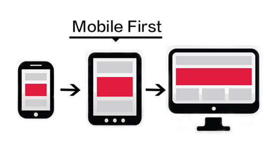

Diseño Mobile First
14 de junio de 2025
Empezar el diseño pensando en dispositivos móviles mejora la experiencia del usuario y la performance
del
sitio.
En esta entrada vas a poder aprender a cómo aplicar el enfoque mobile-first usando
media queries.